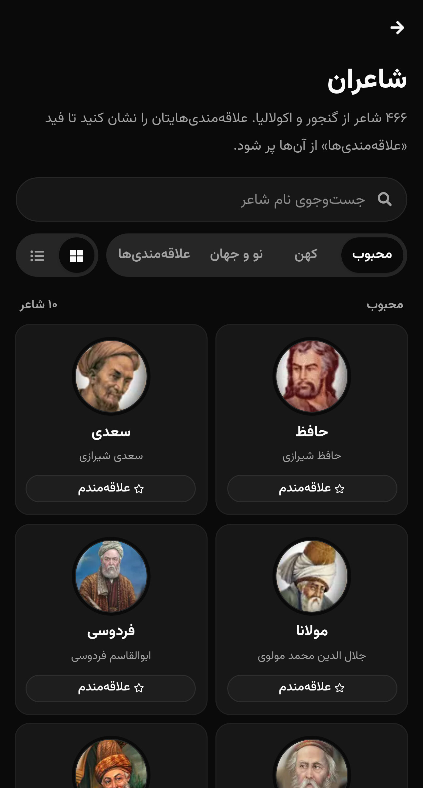
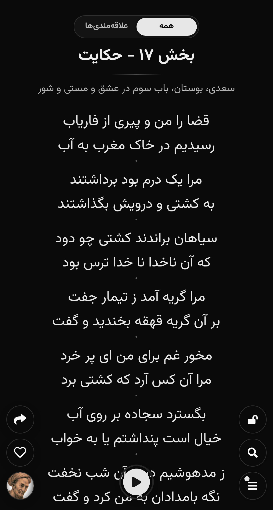
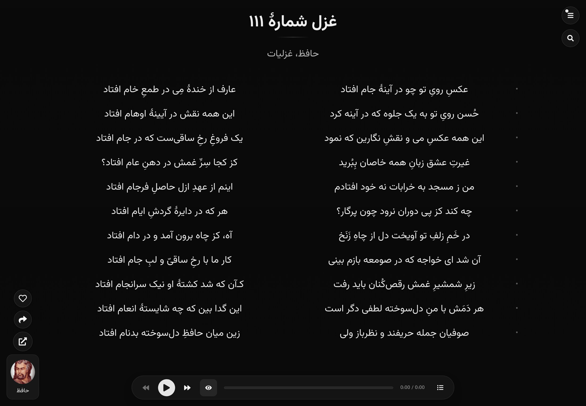
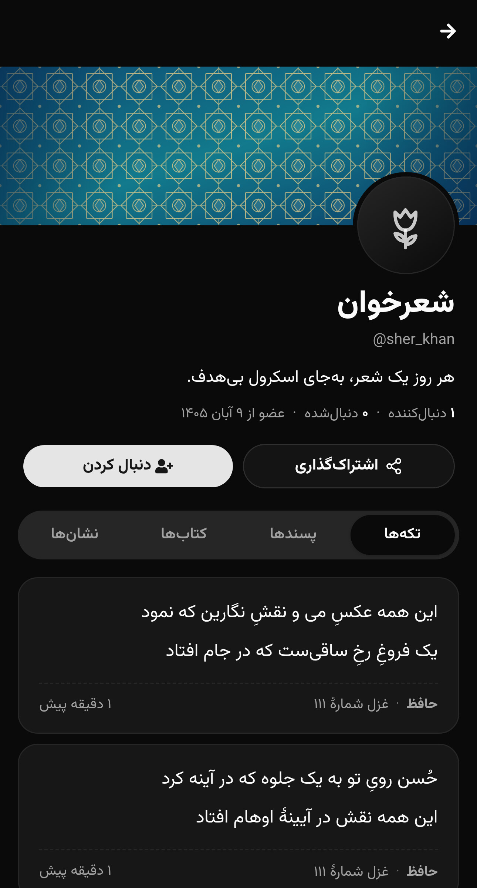
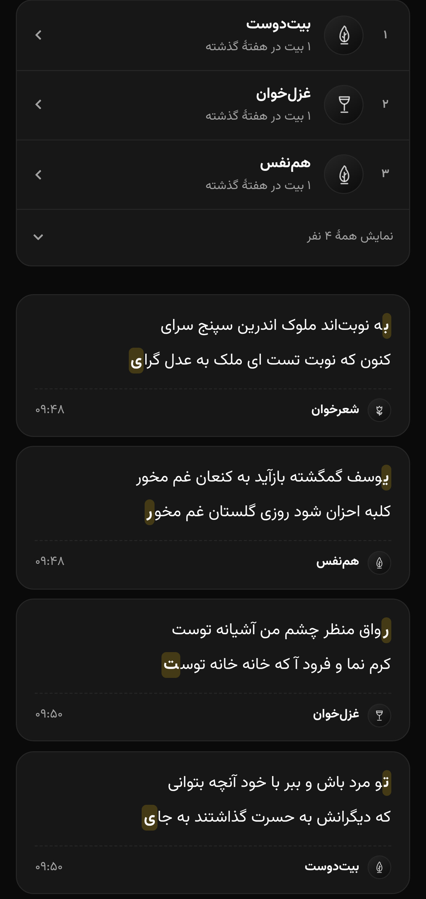
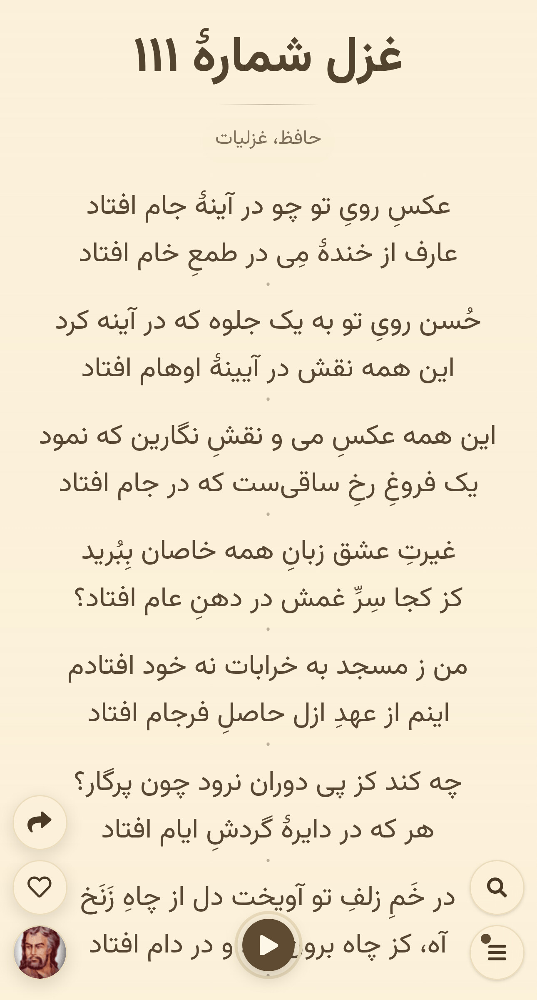

گنجورک
راحتتر شعر بخوانیم و شعر گوش دهیم.
ganjoorak.ir
گنجورک چیست
درگاهی برای خواندن و شنیدن شعر فارسی؛ هر بار شعری تصادفی، در قالبی کوچک.
پروژهای مستقل از گنجور
ریشهٔ نام
گنجور + ک
«ک» پسوند تصغیر است؛ شعر در حالتی کوچک نمایش داده میشود.
شروع
اسفند ۱۴۰۳
پروژهای ساده بهعنوان هدیه برای یکی از عزیزانم؛ برای خواندن شعر شاعران محبوب گنجور، به صورت اسکرول.
آن موقع
یک صفحهٔ سبک برای اسکرول شعرهای محبوب.
حالا
در حال تبدیل به شبکهٔ اجتماعی شعردوستان.
هدف اصلی گنجورک
یک شبکه
اجتماعی ساده
برای کسی که روزمرگیاش شعر خواندن است
و یک
صفحه سریع
برای کسی که میخواهد یک بیت شعر زیبا بخواند
هدف پروژه
یک تجربهٔ بهتر از شنیدن و خواندن شعر فارسی
جایگزین اسکرول بیمعنا
بهجای اینستاگرام و یوتیوب، چند دقیقه شعر.
روشی خوب برای گذران وقت
میخواهیم این رفتار را به کاربر القا کنیم که شعر خواندن هم راه خوبی برای گذراندن وقت است.
کارکردها
از یک شعر تصادفی تا مشاعره با دوستان.

منابع شعر
شعرها را از گنجور میآوریم، همراه با اکولالیا و مجموعهٔ محلی
شعر در نمایهٔ گنجور
شاعر از گنجور
شاعر از اکولالیا

هر بار، یک شعر تازه
صفحهٔ اصلی
شعرهای تصادفی، تمامصفحه و پشت سر هم.
جستوجو
شاعر، مصرع یا یک واژه؛ با حالت معنایی.
نمایشگر شعر
خوانش صوتی با چند خواننده
برجستهشدن بیت همپای صدا
کارت تصویری و ویدیویی برای اشتراک


شعر، میان آدمها
تکههای شعر
هر جای شعری را که دوست دارید در صفحهٔ خودتان بگذارید.
دنبال کردن
تکههای تازهٔ دوستان، به شکل استوری.
صفحهٔ عمومی
نشانی شخصی، بنر و آواتار؛ با امکان خصوصیکردن.
استریک و نشانها
استریک فقط روزانه نیست و نشان هم فقط برای روزهای پیاپی نیست.
سه روز پیاپی
یک هفته شعر
یک ماه شعر
مشاعره
نشان برای مشاعرههای زیاد

مشاعره
صفحهٔ همگانی
یک صفحهٔ مشترک برای همه، با جدول برترینهای هفت روز.
مسابقهٔ تیمی
دو تیم یک تا پنج نفره؛ هر نوبت از ۳۰ ثانیه تا یک روز.
سرور داور است: حرف اشتباه و بیت تکراری رد میشود.

شعر به سلیقهٔ شما
تم
تاریک، روشن و کاغذی
قلم
از وزیرمتن تا ناهید
نصب
اجرا از صفحهٔ اصلی گوشی
استک فنی
یک رابط Next.js و یک سرویس کوچک Go، روی یک VPS.
فناوریها
github.com/ganjoorakسرویس حسابها
ورود ساده
فقط نام کاربری و گذرواژه، بدون ایمیل.
مشاعرهٔ زنده
بهروزرسانی با polling هر ۲ تا ۴ ثانیه.
پنل مدیریت
نقشها، مسدودسازی، حذف محتوا و ثبت رویدادها.
قبلاً فلاتر کار میکردم، الان بیشتر سمتوسوی کاتلین و وب هستم.
زیاد با ایجنتها کار میکنم.
به خبر نوشتن و گردوندن جامعههای مختلف علاقه دارم.
زیاد آهنگ گوش میدم، مخصوصاً رادیوهد.